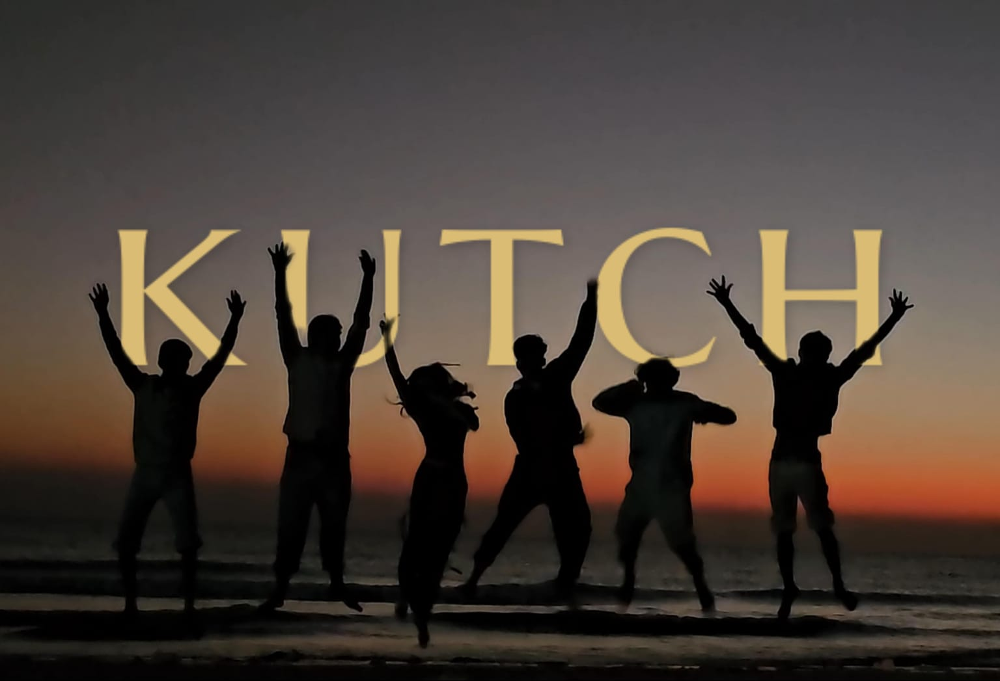

There is a silence in the Rann that doesn't just exist; it weighs. It is the silence of salt, of a landscape so flat that the horizon doesn't just end, it dissolves into a white haze where the sky and the earth trade places. We arrived in Bhuj when the winter sun was still sharp, carrying nothing but a curiosity for the edges of India.
"The Rann of Kutch is not a desert. It is a memory of an ocean that decided to leave, but forgot to take its salt with it."
From the bustling narrow lanes of Bhuj, where the fragrance of spices and the sound of bells fill the air, to the vast, shimmering expanse of the White Rann, the transition is jarring. It is a journey from the crowded heart of civilization to the very periphery of existence.

The silhouetted horizon of the white desert at dusk.
Then there was Mandvi. A town where the wooden skeletons of ships-to-be rise like prehistoric monsters from the mud of the Rukmavati River. Men work with hammers and saws, building ships the same way they did three hundred years ago. No blueprints, just the intuition of wood and the legacy of the sea.
Bhuj - Mandvi - Kutch. It wasn't just a trip; it was a five-day immersion into a world where time feels thicker. Where the salt under your feet and the wind in your face tell a story that maps can't capture.